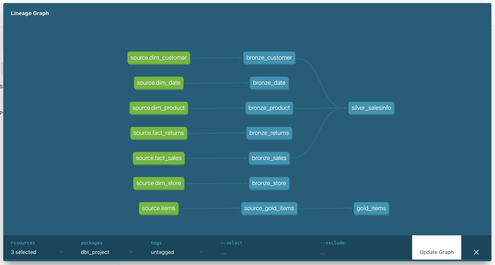

Portfolio / 2026
Understanding
movement,
behavior,
and invisible
patterns.

Hello.
I’m Nitin Singh.
A Germany-based data analyst exploring forecasting, behavioral patterns, movement, and large-scale systems through data.
I enjoy understanding why systems behave differently under pressure — from transport congestion and customer drop-offs to hiring trends and operational inefficiencies.
I became obsessed with understanding why systems slow down, why users disappear halfway through funnels, and how invisible patterns shape real-world systems.
ANALYTICS IMPACT
34M+
GTFS Records Processed
50K+
Job Listings Analyzed
1M+
E-Commerce Transactions
15+
Dashboards Built
WHAT I WORK ON
TOOLS & STACK
Analytics & BI
Visualization & Reporting
Data Engineering
Product & Workflow
SELECTED PROJECTS
Transport Network Analysis & Optimization System


Python · SQL · Tableau · Forecasting · NetworkX
Processed and analyzed 34M+ GTFS records to identify congestion behavior, route inefficiencies, delay propagation, and operational variability across transport systems.
Built forecasting models and analytics systems to study peak-hour movement patterns and optimization opportunities.
Data Job Market Analysis – Germany


Python · Pandas · NumPy · Matplotlib · SQL
Processed 50K+ job postings analyzing demand trends for SQL, Python, BI tools, and salary distribution across Germany.
Built automated preprocessing workflows, market segmentation analysis, and demand forecasting insights.
E-Commerce Sales Performance Analysis


SQL · BigQuery · Looker Studio · Funnel Analytics
Analyzed 1M+ transactions identifying customer behavior, checkout abandonment, revenue drivers, and purchasing trends.
Built KPI dashboards, segmentation analysis, and funnel reporting systems supporting revenue optimization opportunities.
Modern Data Pipeline Architecture

dbt · Databricks · SQL · ETL · Data Modeling
Designed modern analytics engineering workflows inspired by scalable medallion architectures.
Focused on lineage tracking, modular SQL transformations, testing workflows, and scalable analytics engineering practices.
EXPERIENCE
2023 — 2024
WhatYouTech
Performance Marketing & Analytics Analyst
Managed multi-channel campaign analytics, conversion funnels, segmentation, forecasting, and KPI reporting across high-volume digital campaigns. Built SQL-based reporting systems to identify drop-offs, improve ROI, support budget decisions, and optimize user acquisition performance through experimentation and behavioral analysis.
2021 — 2022
ThoughtStart
Web & Analytics Developer
Built analytics tracking systems and reporting workflows for an LMS platform serving thousands of learners. Improved engagement tracking, reduced bounce rates, optimized website performance, and supported enrollment analysis through dashboard systems and user behavior monitoring.
2021
Ono Teas
Analytics & Marketing Intern
Supported analytics, CRM workflows, and campaign performance tracking across social and web campaigns. Worked with HubSpot and Bitrix24 to monitor engagement, traffic, conversions, customer response metrics, and optimization opportunities for multiple client campaigns.